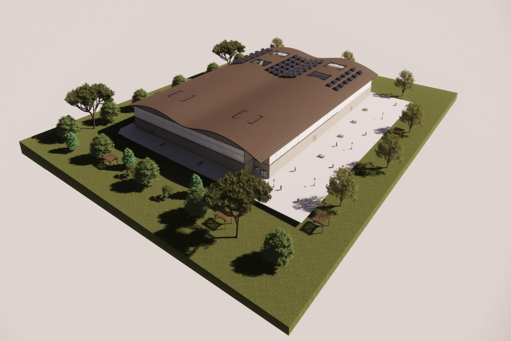
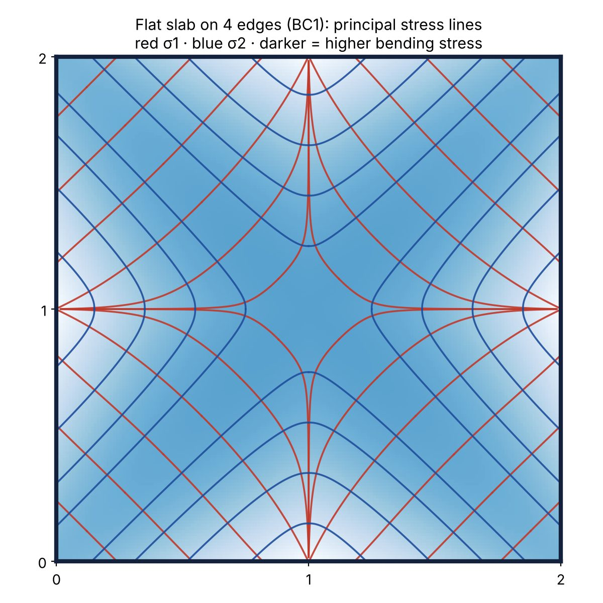
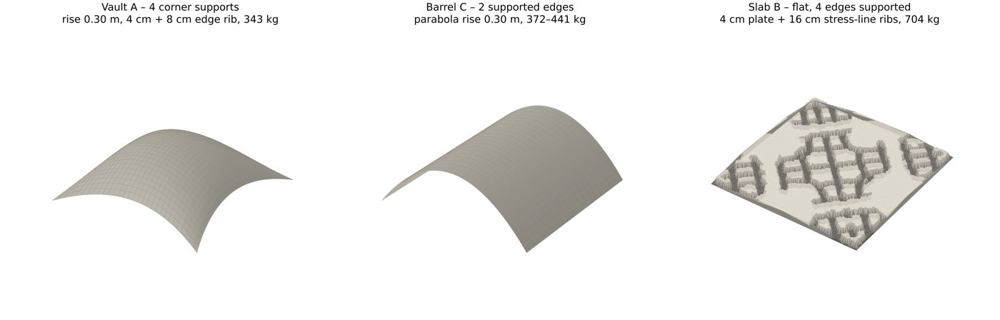
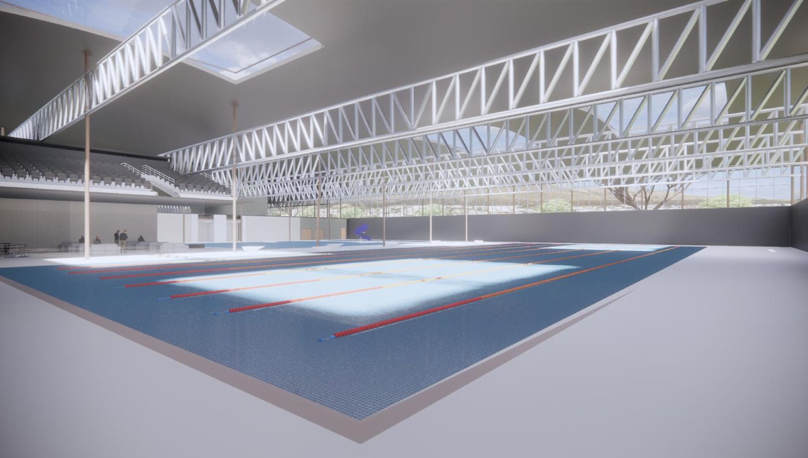
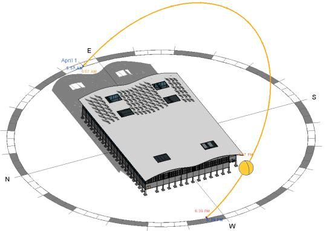
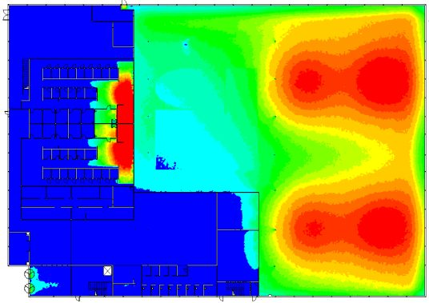
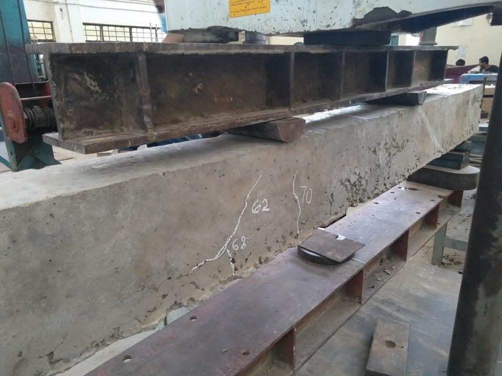
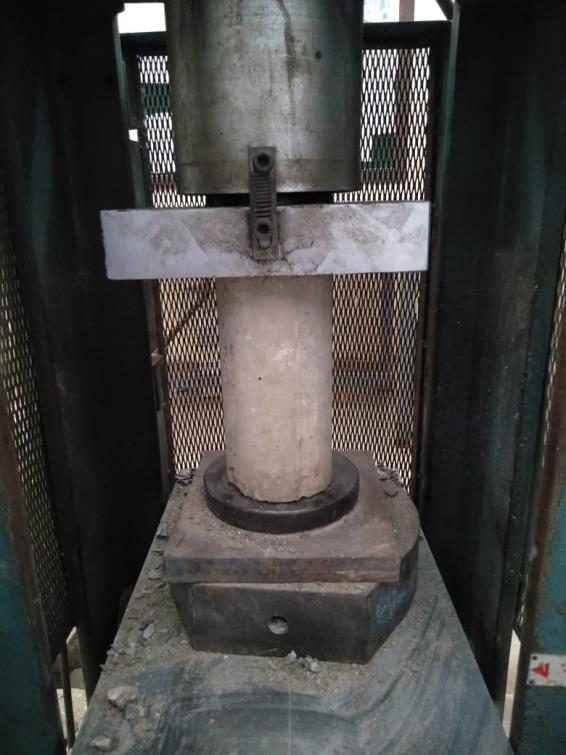

Three years planning, checking and coordinating reinforced concrete and steel buildings in Karachi, now an M.Sc. Civil Engineering student at the Technical University of Munich working on BIM, sustainability analysis and 3D-printed concrete.

Planning, design and site coordination for residential, institutional and industrial clients.
| Project | Scope |
|---|---|
| Creek Marina Residential Complex, DHA Karachi | 5 high-rise towers, podium, club house, double basement, about 316,000 m² |
| The Citizens Foundation Schools | 14 schools in Sindh and Punjab |
| Casa De Royale, Bahria Town | Basement + ground + 18 storeys, about 11,700 m² |
| Sky Line Towers, Karachi (AKICT) | Ground + 16 storeys, about 17,200 m² |
| Unilever PC Factory, Rahim Yar Khan | Renovation and retrofitting of an industrial building |
| PIA Precision Engineering Complex, Karachi Airport | Structural steel hangar and 6 RC offices |
Academic work at TUM and NED University, with the numbers behind each result.
Printed mortar is strong in compression but weak in tension and at its layer joints. The thesis uses principal stress lines to shape the element, place material where it is needed and plan the robot's print path, starting with a 2 x 2 m slab.
An optimisation run reported layouts stiffer than a solid plate of full depth, which is physically impossible. I traced the cause to how the software counted removed elements, corrected the setup and re-ran every layout. Continuous ribs along the stress lines turned out to be the best flat-slab solution. I also built a small script that keeps stress lines evenly spaced at 0.15 m, and checked robot reach for 20 print paths, which showed the slab must be printed in segments.





Team of 4 designing an aquatic center with competition, training and leisure pools under a wide-span roof. I led the sustainability chapters: energy, daylight, solar and life-cycle assessment.
Whole-year solar study in Revit with the project's real location, an annual PV energy study, daylight factor, spatial daylight autonomy and LEED v4 daylight checks, and an energy model in Autodesk Insight that stayed below the ASHRAE 90.1 baseline. Added skylights and reduced the roof projection to bring every floor above a 2% daylight factor. Ran a 50-year life-cycle assessment in One Click LCA with German ÖKOBAUDAT data. The team exchanged models in BIM 360, checked them in Solibri and produced a model-based bill of quantities.
Team of 4 turning IFC building models into a graph that can be searched and analysed. I designed the graph meta-model, which links project, building, storey and space data, and the testing and evaluation plan. The pipeline parses IFC files with IfcOpenShell into JSON and GraphML for queries in Neo4j with Cypher.
Cast and load-tested 11 reinforced concrete beams and 33 cylinders. Externally bonded CFRP raised the capacity of shear-deficient beams by up to 18% and matched beams with stirrups; recycled aggregate concrete behaved similarly to natural aggregate concrete.


Team of 8. I wrote the well-being and quality-of-life strategy with 20 actions, from KfW 55 building standards and PV on all blocks to mobility hubs, shared common rooms and active ground floors, and co-wrote the vision, SWOT analysis and conclusion.
Team of 5 analysing how floods and extreme weather affect property values and insurance premiums in Germany, with recommendations for risk-based valuation by investors.
Tools I have used on real projects or in graded university work.
Focus: Computational Modeling and Simulation, Energy-Efficient and Sustainable Building, Real Estate Development, Transportation Systems. Deutschlandstipendium scholarship holder.